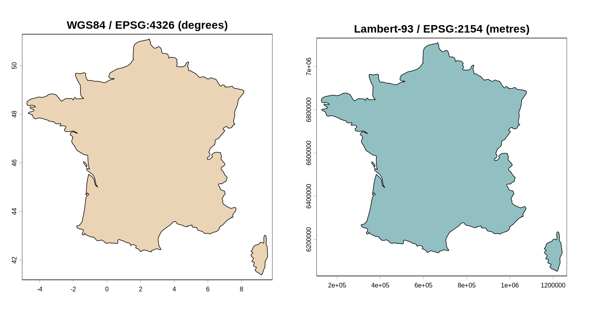
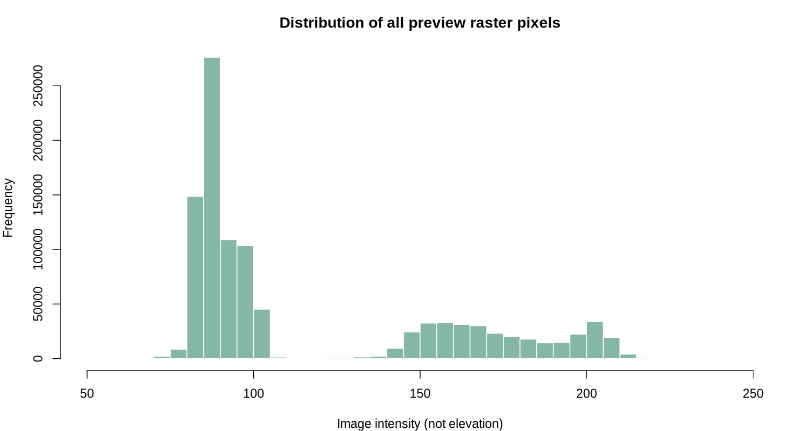
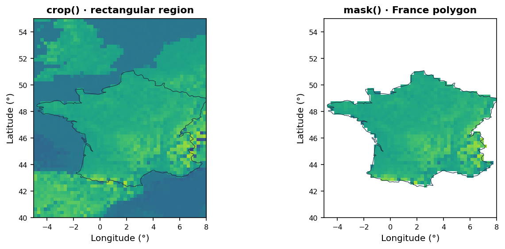

Learning objectives
By the end of this module, you should be able to import SpatVector and SpatRaster objects; inspect spatial metadata; query and map attributes; transform a vector CRS; create a point layer from tabular coordinates; and crop, mask, and export a raster.
Spatial-analysis-with-R.Rproj file in RStudio, then run the project-check script. Download or clone the full GitHub repository so relative paths work in RStudio. The original GeoPackages and the French NPP spreadsheet are stored under data/vectors/. This update adds a reduced-resolution preview of the original global raster under data/rasters/. Download the complete R script ↓2.0 · Set up your R project
Open Spatial-analysis-with-R.Rproj from the extracted repository root (the folder that contains data/, scripts/ and lessons/). Before importing data, run source("scripts/00-check-project.R"). Install the packages once if they are missing. Keep the repository root as the working directory.
# First: check project location and input files
source("scripts/00-check-project.R")
# Run once if needed
# install.packages(c("terra", "readODS", "RColorBrewer"))
library(terra)
library(readODS)
library(RColorBrewer)
dir.create("outputs", showWarnings = FALSE)2.1 · Vector data
2.1.1 · Importing vectors
Use terra::vect() to read the Natural Earth GeoPackage containing country boundaries. This creates a SpatVector. GeoPackage (.gpkg) is a modern GIS file format supported by QGIS and R.
countries <- vect("data/vectors/ne_50m_admin_0_countries.gpkg")
plot(countries, col = "beige")Pan, zoom, and click a country to inspect its name. France is highlighted, as in the R exercise.
2.1.2 · Accessing metadata and attributes
Inspect the object, coordinate reference system (CRS), extent, and attribute table. The source course reports 241 country features, 63 attributes and WGS84 (EPSG:4326). Your local package and data version determine the displayed details.
print(countries)
crs(countries)
ext(countries)
country_attributes <- as.data.frame(countries)
head(country_attributes)
france <- countries[countries$adm0_a3 == "FRA", ]
plot(countries, col = "lightgray")
plot(france, col = "gold", add = TRUE)2.1.3 · Attribute processing and thematic mapping
The source dataset uses -99 to indicate some missing GDP or population estimates. Filter invalid entries before computing GDP per capita. Compare a qualitative palette for economic category with a sequential palette for ordered GDP-per-capita classes.
countries2 <- countries[countries$gdp_md_est > 0 & countries$pop_est > 0, ]
countries2$gdp_hab <- countries2$gdp_md_est * 1e6 / countries2$pop_est
hist(log10(countries2$gdp_hab))
classes <- cut(countries2$gdp_hab,
breaks = c(0, 3000, 10000, 20000, 40000, Inf),
labels = c("<3k", "3–10k", "10–20k", "20–40k", ">40k"))
cols <- brewer.pal(5, "Greens")
plot(countries2, col = cols[as.integer(classes)])
legend("bottomleft", legend = levels(classes), fill = cols, bg = "white")Switch between sequential colours for GDP per capita and qualitative colours for economic categories. Click countries to view their attributes.
RColorBrewer. Then change the class breaks: what changes on the map? A full implementation of the economic-category map and GDP-per-capita boxplot is in the downloadable script.2.1.4 · Projecting vectors
Extract metropolitan France with a geographic extent, then transform its coordinates from WGS84 to Lambert-93 (EPSG:2154). Assigning a CRS is not the same as projecting coordinates.
france_met_wgs84 <- crop(france, ext(-5, 8, 40, 55))
france_met_l93 <- project(france_met_wgs84, "EPSG:2154")
par(mfrow = c(1, 2))
plot(france_met_wgs84, col = "pink", main = "WGS84")
plot(france_met_l93, col = "lightblue", main = "Lambert-93")
par(mfrow = c(1, 1))
2.1.5 · Creating spatial points from a spreadsheet
Import French_NPP.ods, which contains nuclear power plant data. Use its Lon and Lat columns to create a WGS84 point layer. In the full script, map operating-start decade with colour and net power with symbol size.
npp <- read_ods("data/vectors/French_NPP.ods")
head(npp)
npp2 <- vect(npp, geom = c("Lon", "Lat"), crs = "EPSG:4326")
plot(france_met_wgs84, col = "coral")
points(npp2, col = "gold", pch = 19)Markers represent records in French_NPP.ods. Click a marker for the installation name, net power and operation-start year. Multiple records may share the same location.
French_NPP.ods. Educational visualization; not a current operational-status map.2.1.6 · Exporting vectors
Save the projected layer to outputs/ without modifying the source file.
dir.create("outputs", showWarnings = FALSE)
writeVector(france_met_l93, "outputs/france_met_l93.gpkg", overwrite = TRUE)2.2 · Raster data
2.2.1 · Importing rasters
The source lesson uses the global GRAY_50M_SR_OB.tif image. To keep the GitHub exercise lightweight, this repository includes a smaller preview raster derived from that file by nearest-neighbour downsampling. It preserves geographic coverage and indicative image values, but has lower spatial resolution. The values are display intensities, not elevation in metres. An interactive raster view and a reproducible crop/mask comparison appear below.
earth <- rast("data/rasters/GRAY_50M_SR_OB_preview.tif")
plot(earth)
plot(earth, legend = FALSE, col = gray(seq(0, 1, length.out = 101)))
lines(countries, col = "darkblue")2.2.2 · Raster metadata
Use res(), ext() and crs() to inspect pixel size, extent and spatial reference. The original 10,800 × 5,400 image has a pixel size of approximately 0.0333°; the downloadable preview is 1,440 × 720 pixels at 0.25°.
print(earth)
res(earth)
ext(earth)
crs(earth)2.2.3 · Summarising cell values
A histogram and summary describe the image values; R may use a sample of raster cells, especially for large rasters.
summary(earth)
hist(earth)
GRAY_50M_SR_OB_preview.tif. These pixel values are image intensities, not elevations. Your R output may differ slightly in bins and sampling.2.2.4 · Cropping and masking rasters
crop() limits the raster to a rectangular geographic extent; mask() sets pixels outside a polygon to NA. Here both operations use the metropolitan-France polygon.
topo_crop <- crop(earth, france_met_wgs84)
topo_mask <- mask(topo_crop, france_met_wgs84)
par(mfrow = c(1, 2))
plot(topo_crop, main = "Crop")
plot(topo_mask, main = "Crop + mask")
par(mfrow = c(1, 1))
crop() trims to a rectangle; mask() removes values outside the polygon.Zoom and pan to explore the result; switch between the global raster, rectangular crop and polygon mask. The resolution is intentionally reduced for web display.
2.2.5 · Exporting rasters
Export the masked image as a GeoTIFF.
writeRaster(topo_mask, "outputs/france_met_topo_mask.tif", overwrite = TRUE)Practical exercises
- Identify the geometry type, number of attributes and CRS of the country dataset.
- Explain why a sequential palette is preferable for GDP per capita and a qualitative palette for economic categories.
- Compare France's shape before and after projection into EPSG:2154. Which coordinate units are used?
- Create a map of French nuclear power plants with at least two mapped attributes.
- Explain the difference between
cropandmask, and identify the two exported files inoutputs/.
Datasets and reproducibility
For the vector sections, use the GeoPackage and ODS files from data/vectors/ that have already been uploaded to the repository. The full-resolution original raster and the other large raster datasets remain in the separately supplied original archive; the reduced preview included with this update is sufficient for the steps demonstrated here.
↓ Download complete Module 2 R script Download raster preview
Source acknowledgement: This module uses Natural Earth geographic data, the original course dataset collection, and a derived preview of the supplied raster. See dataset metadata for third-party terms of use.